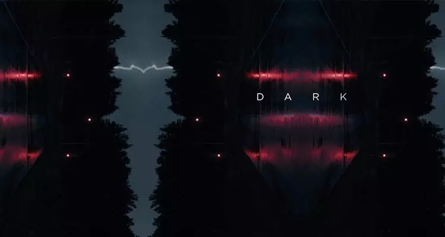
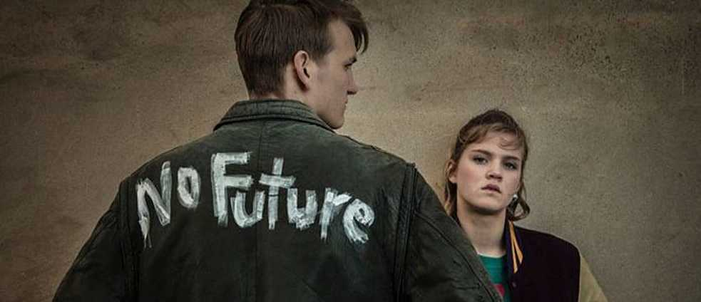
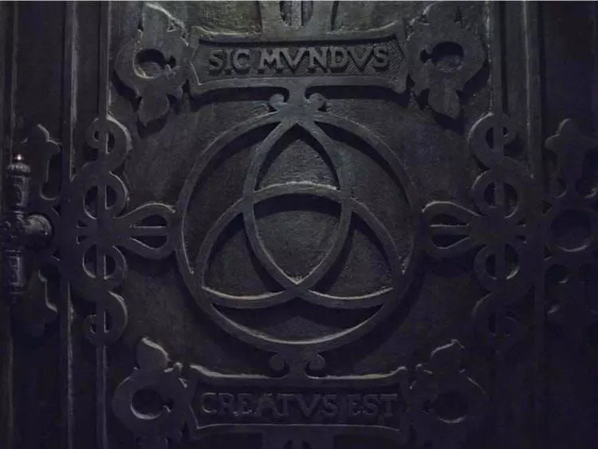
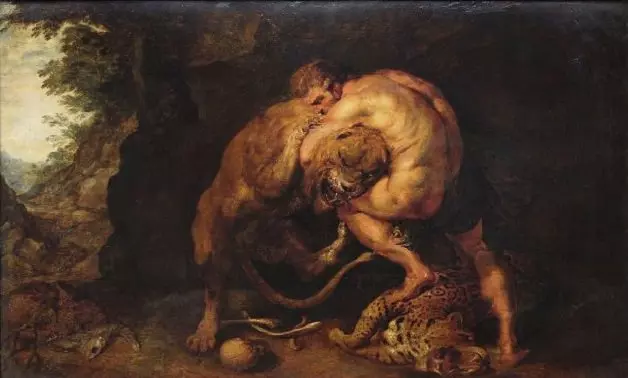

ده فکت از این سریال
فکت اول
تفاوت گذاشتن بین گذشته ، حال ، اینده تنها یه توهم همیشگی و لجبازانه هست
جمله آلبرت انیشتین که در اول سریال نمایش داده میشه داره به ما مفهوم این سریال رو میرسونه
اینکه هیچ فرقی بین 3 زمان نیست
فکت دوم

تیتراژ سریال نکته ایه که خیلی میشه راجبش بحث کرد. هر تصویری که نشون داده میشه یه معنی خاصی داره
که شما تو فصل بعدش میبینید . آینه بودنشون هم نشانه اینه که 2 جهان وجود داره و یه چیز جالب تر اینه که
تو تیتراژ فصل 2 گهگاهی وقتی تصویر آینه میشد ما اون تصویر رو 3 تا میدیدیم که اشاره به فصل 3 داره
فکت سوم
اسم شخصیت ها هم بی دلیل انتخاب نشده و هر اسم دلیل جالبی داره برای انتخاب شدنش .
برای مثال اسم جوناس که شخصیت اول فیلم هست الهام گرفته از یکی از خدایان یونان باستانه به اسم
Janus
که دارای دو سر هست که معتقدن که هم در آینده و هم در گذشته وجود داره
البته اسم جوناس هم میتونه الهام گرفته از یونس هم هست که معنی صلح هست
مارتا به معنای معشوقه زن و تلخی دوست داشتنیه
هانا در کتاب عهد عتیق زنی هست که بچه دار نمیشه ، فرار میکنه و به یک سفر میره خدا صداشو میشنوه و بهش یه بچه میده که میتونیم این رو تو سریال ببینیم!
کاترینا به معنی باستانی کسی هست که به ناحق زجر میبینه و عذاب میکشه و به دست خویشاوندانش کشته میشه.
اولریش یا اولرایچ هم به معنای مردی هست که میتونه زن ها رو به سمت خودش جذب کنه
و اسم های آدام و ایوا برگرفته از اسم حضرت آدم و حضرت حوا هستن که جوناس و مارتا رو به این دو شخص تشبیه میکنن و
نوآه هم برگرفته از اسم حضرت نوح هست
فکت چهارم
اگر بخوایم یه مثلث رو در نظر بگیریم و 3 نفر سر هر ضلع باشن که به عنوان مهمترین کاراکترای سریال باشن قطعا تانهاوس مهم ترینشونه .
همون کسی که ماشین زمان رو میسازه و همچنین سازنده دنیای جوناس و مارتا هم هست یکی از مهم ترین شخصیت های فیلم که شاید هیچکس فکرشو نمیکرد!
اسم این کاراکتر به نشان ادای احترام از H.G. Wells که کتاب ماشین زمان رو نوشته
فکت پنجم

کلمه No Future
یا همون آینده ای در کار نیست نوشته شده که دقیقا مثل آینده بود که اولریچ نداشت و در گذشته گیر کرده بود.
فکت ششم

اگر دقت کرده باشید توی غار یه بند قرمز رنگ بود که راه رو نشون میداد (راه سفر در زمان) اما به یه چیزی وصل بودن که این مار هست
(که فکر میکنم تورنته هم یه چیز مشابهش رو به یه دختر داد)(1953)
مار اوروبوروس چی هست حالا ، مار اوروبوروس ، نماد چرخه زندگی هست و همچنین نماد تناسخ تو بعضی از باور ها هم هست.
و همینطور نماد بینهایت هم هست!
که در شجرنامه زیاد دیدیم بینهایت رو
حالا چرا داره دم خودشو میخوره ؟ با اینکار داره چرخه بینهایت رو به ما نشون میده که
تموم نشدنی هست و همینطور تکرار میشه و گیر افتادن توشه
فکت هفتم

عبارت سیک موندوس به معنای اینه که و جهان اینگونه خلق شد
این عبارت از کتابهای قدیمی و مذهبی آلمانی سرچشمه میگیره.
این عبارت خیلی زیاد تو کلیسای شهر ویندن، داخل عمارت یا حالا جایی که آدام هست و توی کتابها و روی عکسهای مختلف وجود داره،
معنای «آغاز» هم میده و به آغاز تمام اتفاقات سریال اشاره میکنه
فکت هشتم
ارتباط سریال دارک با فیلم شاینینگ
مارتا و مگنوس دارن با هم صحبت میکنن که پشت سرشون دو تا دختر رو میبینیم
این مارو یاد دو دختر دو قلوی فیلم شاینینگ میندازه
فکت نهم

افسانه مینوتور
انگار که این داستان بر اساس این افسانه ساخته شده !
مینوتور چیه ؟ مینوتور هیولایی هست با سر گاو . بدن انسان و توی یک هزار تو زندانی شده
جوون های شهر رو میفرستن برای قربانی و مینوتور میره و اون هارو میخوره
دقیقا مثل نقش نوآه
که توی هزار توی زمان گیر میکنه و با برای چرخه مجبوره که قربانی هایی رو انجام بده که ما مدز و اریک گمشده رو دیدیم
یک روز تسئوس تصمیم میگیره بره و با مینوتور بجنگه تا به این چرخه خاتمه بده . قبل از اینکه بره با زنی به اسم آریادنه آشنا میشه و عاشق هم میشن و
آریادنه به تسئوس کمک میکنه که بعد از اینکه مینوتور رو کشت از هزار تو بیاد بیرون . یه طناب به خودش میبنده تا مسیر رو گم نکنه
جوناس مثل تسئوس هست که توی هزار تو یا همون غار سرگردون به دنبال بستن چرخه هست
مارتا مثل آریادنه هست که عاشق تسئوس هست و کمکش میکنه
و حتی نمایش آریادنه رو مارتا تو دنیا ها اجرا میکنه
و همین هزار تو هم در فیلم شاینینگ دیدیم
جیک رو مینوتور فرض میکنیم
پسر جیک رو تسئوس
فکت دهم
معنی بعضی از جملات در سریال
چرا 12 نوامبر ؟
یکی از مهمترین تاریخهای سریال، ۱۲ نوامبر هستش. این تاریخ یکی از مهمترین تاریخهای این سریال هست، تاریخ بسیار مهمی تو فیلم Back To the Future محسوب میشه.
در این فیلم که یکی از فیلمهای بسیار جذاب در ژانر سفر در زمان است تاریخ ۱۲ نوامبر نقش بسیار پررنگی دارد؛ در این تاریخ تمام برخوردهای سفر در زمان پدیدار میشوند.
Atomkraft, nein danke
عبارتی که روی تیشرت مدز که در جنگل پیدا شده بود.
این عبارت بهمعنی «نه به انرژی هستهای» است. که یکی از شعار های اصلی گروه مخالف با انرژی هستهای در تظاهرات سال ۱۹۸۰ در کشور آلمان بود.